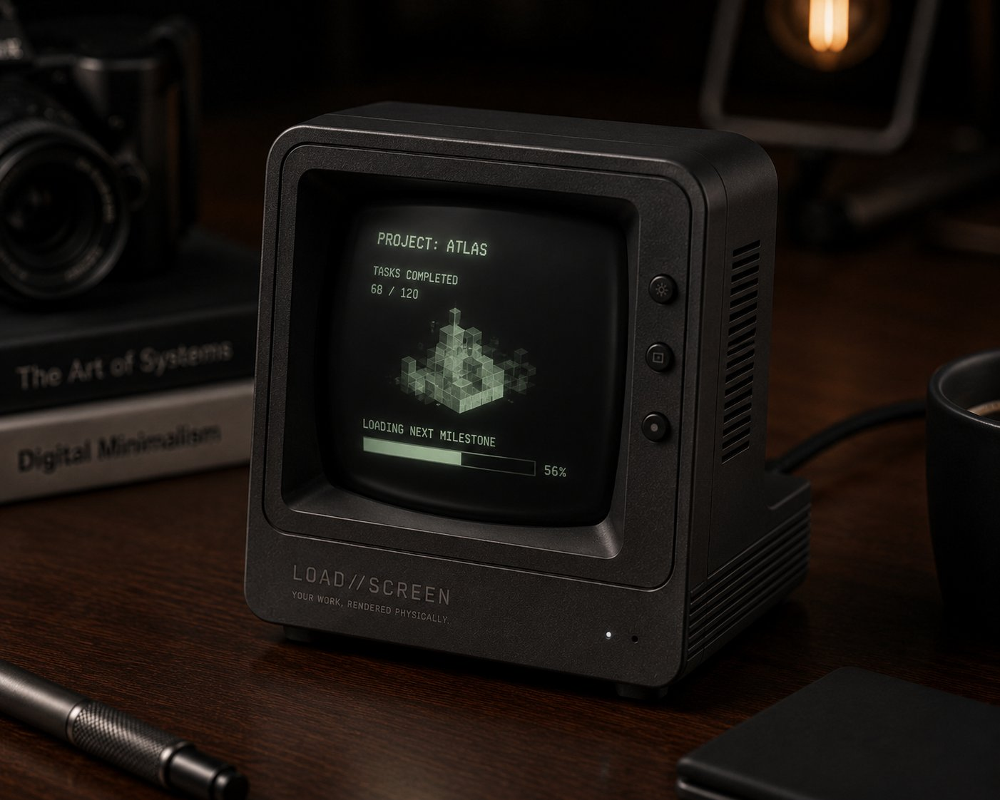
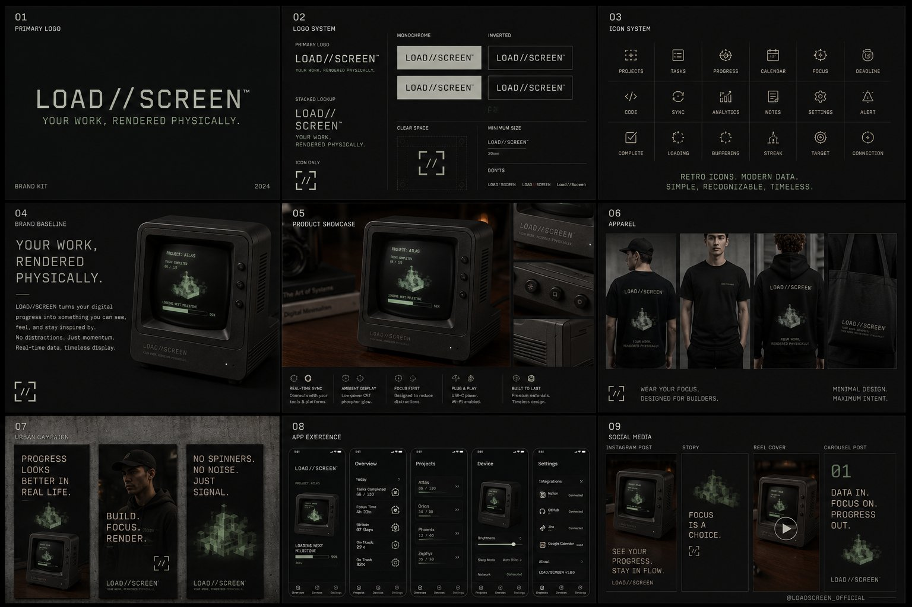

An ambient desk object that visualises your workload, focus, or task progress using retro loading animations. A tiny CRT-style display with phosphor glow, pulling live data from Notion, GitHub, Jira, or your calendar — the ritual of waiting, made productive.
Pair the unit to your stack via the companion app — Notion board, GitHub repo, Jira sprint, calendar feed.
The day's progress translates into a loading animation: bar fills, dots cycle, the screen flickers awake.
Glance up between tasks. Your work, ambient — never a notification, always a presence.
Loading bars, spinning dots, scanline boot — references built from real frames, not stock GIFs.
Notion, GitHub, Jira, calendar, webhooks. Whatever feeds your day, feeds the screen.
Soft warm-up, idle hum, slow shut-down. The light is the half of the product you can't screenshot.
Resin face, CNC machined base, weighted to feel like a small piece of broadcast equipment.
Companion app exposes the renderer — write your own loading animations and feeds.
Social-media-shareable by design. The screen is the photograph; the desk is the studio.

Load//Screen is a visual-first product, built to be photographed, shared, and admired. Kickstarter run with numbered units for early backers; later tiers unlock animation packs and custom-feed presets.